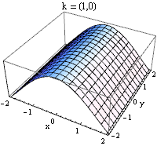
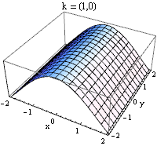

Lichi
I, i’m trying to create an ocean simulator, and the first step is create waves like this gif:

But I don’t know how i can create the array of nodes.
Someone help me?
Thanks! 

I, i’m trying to create an ocean simulator, and the first step is create waves like this gif:

But I don’t know how i can create the array of nodes.
Someone help me?
Thanks!

I think you’ll have more success setting up dynamic geometry like in this example: github.com/urho3d/Urho3D/blob/m … ometry.cpp
You’ll be able to set up a simple loop like this (unchecked):
const float stepSize = 0.2;
const float min = -2.0;
const float max = 2.0;
timer += timeStep;
const int arrayDim = int((max - min) / stepSize);
float vertexData[arrayDim * arrayDim * 6];
int xi = 0;
for (float x = min; x < max; x += stepSize)
{
int yi = 0;
for (float y = min; y > max; y += stepSize)
{
// Fill out vertexData array
}
}